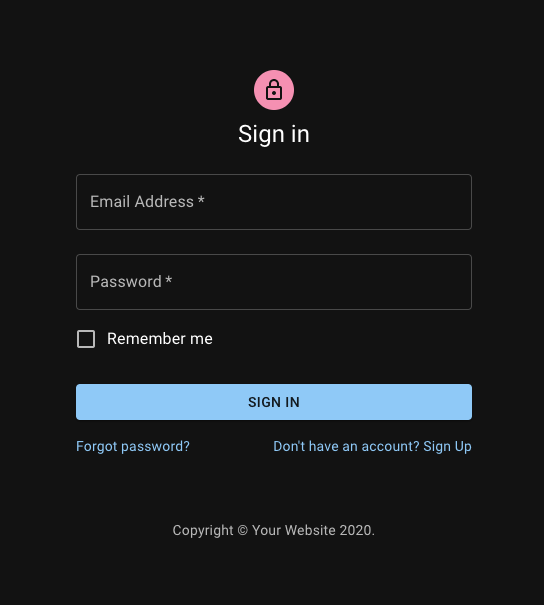
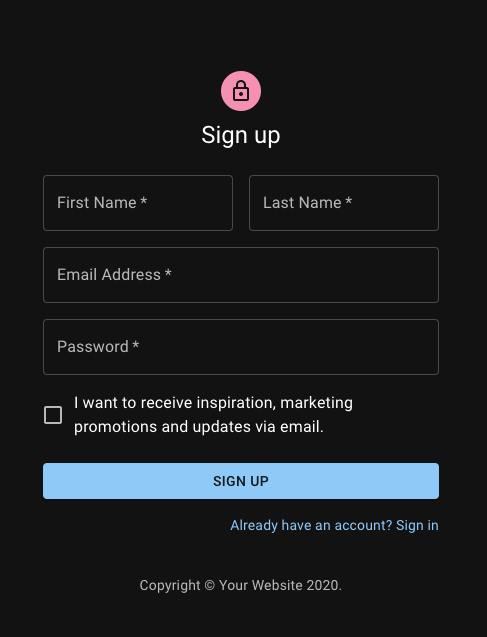

(!) Домашние задания нужно сдавать в виде странички на GITPAGES.
Видео о том как сдавать ДЗ
Тут инструкции как это сделать с реактом
Задание Basic:
Вам необходимо создать и привести в рабочее состояние простую форму входа и регистрации в приложение.
Обратите внимание, что все инпуты должны хранится в state.
Шрифт используется Roboto (Есть на Google Fonts),
ссылка на иконку для логотипа в формах
Переключение между формами реализовать с помощью react-router.


Задание Advanced:
Сделайте проверку на валидацию данных при регистрации.